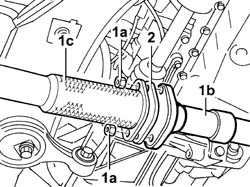
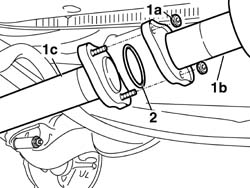

1076B35 catalytic converter rear gasket - r r
- Path
- Procedures > 10 ENGINE > 1076 EXHAUST PIPES AND SILENCERS > 1076B EXHAUST PIPES AND SILENCERS > 1076B35 catalytic converter rear gasket - r r
- Kind
- repair procedure (removal / refitting; the operation number is the code)
- Applies to
- engines: 1.2 8v, 1.4 8v, 1.6 16v; all production periods
- Interactive page
- https://sloeber94.github.io/elrnDB-fDbl/en/#/2584268
Applies to: engines: 1.2 8v; all production periods
 Removing
Removing
 Refitting
RefittingPlace the car on a ramp.
Op. 7055B54 PROTECTION/GUARD UNDER ENGINE - R.R.
1. Undo the fixing nuts (1a) and disconnect the exhaust pipe (1b) from the manifold/catalytic converter (1c).
2. Remove the gasket.

Applies to: engines: 1.2 8v; all production periods
Refitting
RemovingFit a new gasket.
Connect the intermediate exhaust pipe to the manifold/catalytic covnerter and tighten the fixing nuts to torque.
 | Fastening | Component | Ø | Value (daNm) |
|---|---|---|---|---|
- | Nut | CATALYTIC CONVERTER (ONE) | M8 | (Flange connecting intermediate exhaust. pipe) 3 |
Op. 7055B54 PROTECTION/GUARD UNDER ENGINE - R.R.
Remove the vehicle from the ramp.
Applies to: engines: 1.4 8v, 1.6 16v; all production periods
Removing
RefittingPlace the car on a lift.
1. Undo retaining nuts (1a) and detach exhaust pipe (1b) from catalytic converter (1c).
2. Remove the gasket.

Applies to: engines: 1.4 8v, 1.6 16v; all production periods
Refitting
RemovingFit a new gasket.
Connect the intermediate exhaust pipe to the catalytic converter and tighten the retaining nuts to torque.
| Fastening | Component | Ø | Value (daNm) |
|---|---|---|---|---|
- | Nut | INTERMEDIATE EXHAUST SILENCER | M8 | (Flange joint to catalytic converter) 3 |
Remove the vehicle from the ramp.